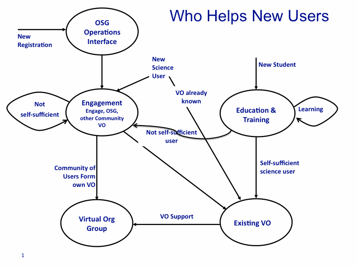

OSG Member Expectations
About this Document
This note says what a Member or Member Organization of the Open Science Grid can expect from the OSG and what the OSG expects from them.
A Member of the OSG is 'registered' through the OSG management interfaces and processes (often provided by the Operations team). Members include owners of resources and technology projects, as well as science research and education user groups and communities, and organizations partnering with the OSG. Members of the OSG include both Organizations (Facilities, DOE Labs, Universities etc) and Virtual Organizations (or Science Communities, Software Projects etc.)
Members of the OSG are either directly represented on the governing Council or through the Collective VO Representatives on the Council.
Official representation of the OSG, including the point of contact for the funding agencies, is through the Executive Director, as described in the OSG Project Cooperative Agreement. The Project PI is responsible for the contractual obligations to the funding agencies. Of course, members of the OSG may contact or work with any other member, OSG staff or contributor. Any member of the OSG may discuss the OSG with anyone, but official representation of OSG (with external projects, organizations and agencies etc) remains through the Executive Director or their designee.
Member Expectations of the OSG
Any member of the OSG can expect to use resources made accessible through the OSG subject to the Policies of the resource owner. The fraction of resources available to non-owners are made through agreement with the Council. The existing members of the OSG Council have agreed to keep their resources configured such that if they are not being otherwise used other OSG communities can use them. "ie opportunistically". Any member of the OSG can expect to determine the availability of resources (enumerated, description and capacity) accessible through the OSG from the Information Services (available at...). The services available to for a member to use are available through an enumerated list of the core services (available at...).
Any member of the OSG may use, receive support for, and make additional requests of software components available from the OSG VDT. New components will be provided based on the assessment of the Software Coordinator and project Executive Team. Support will be provided as possible constrained by the effort and knowledge available.
Any member of the OSG can expect to receive attention to their end-to-end distributed computing goals and needs. They can expect to receive intellectual input to help with their system architecture, design and implementation decisions. They can expect to receive help through the OSG operations and support staff when they have problems or questions.
A VO should determine the support lines for end users within that VO. In general, the VO provides the first line of support for their end users. They work with the OSG to determine if the part for support is "End User -> VO -> OSG staff" or the End User will receive support from the OSG staff directly.
OSG Expectations of Members
Members must comply with the appropriate policies and usage agreements of the OSG.
Members should be willing to communicate and share their accomplishments based on use of the OSG services with the OSG for the purposes of annual reports, newsletters, iSGTW and other publications. Members must report publications that benefited from OSG services to the Council.
Members should
- Endorse the mission and vision of the OSG and be interested to contribute to its mutually beneficial support and progress.
- Support the evolution and innovation of the OSG through helping identify the need for or provide via new collaborations, technologies and practices.
- Provide, support or use some of the common services, and also help improve and evolve those services for the common good.
- Help sustain the community good through intellectual investment, contribution of time and effort, and common current and future interest.
New Member Expectations and Process
Each new member of the OSG registers appropriately through the Operations Center, Virtual Organization, or OSG management body.
End users register with a Virtual Organization (VO). If a new end user is not part of a community registered already registered with the OSG, they can contact the Operations Center for help finding an appropriate VO with whom they can register, that can be an OSG owned VO such as Engagement, a general VO such as GLOW, or community specific VO such as SBGrid or LIGO.
The first line of support is by the VO management and support organizations, and/or support center.
Each new Site or Resource member receives initial help through the Operations Team in addition to their VO.
Each new member, as well as new end users registered with OSG owned VOs (see below), receives help through User Support which can last up to several months to help them derive benefit from the OSG services. Help is given in one or more of:
- providing an understanding of how to use the distributed infrastructure;
- adapting applications to run effectively on OSG sites;
- engaging in the deployment of community owned distributed infrastructures;
- production and VO group staff support to ensure the needs of the new community are met;
- providing common tools and services
- working directly with and in support of the new end users with the goal to have them transition to be full contributing members of the OSG.
User Support is a broad activity within the OSG. To enable effective support given constrained effort available, the engagement of a new member is done by one of several mechanisms. The operations and ET teams ensure that as part of the registration process a potential end user or new member is successfully placed in the right channel for help and support.
- The OSG Engage VO manager at RENCI.
- The OSG Production and VO Group leaders who support members who will shortly be or already are communities with sufficient effort to support their own VO management and support services.
- The OSG VO manager - the Executive Director.
- The OSG Edu(cation) VO
- OSG effort co-located with a community VOs such as GLOW, centered at University of Wisconsin Madison, SBGrid, structural biology grid at HMS, DOSAR Universities, HCC a the University of Nebraska etc.
- Existing OSG members and communities.
